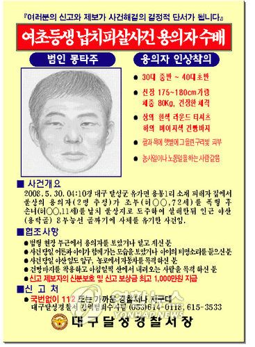

5월 30일 오전 4시 10분경, 허 양의 집에 강도가 침입해서 당시 72세인 허 양의 할아버지를 마구 폭행하였다.
잠을 자고 있던 허 양이 폭행 과정에서 들리는 시끄러운 소리에 즉시 잠에서 깨어 달려나왔다.
그 후 범인은 허 양을 납치하고 그대로 종적을 감추었다.
이후 6월 12일, 인근 야산에서 결국 허 양은 알몸이 된채 싸늘한 시신으로 암매장된 채 발견되었다.
허 양의 옷가지 및 소지품들은 시신이 발견된 야산 0.3km 아래 지점에서 발견되었다.
옷이 벗겨졌다는 이유로 성범죄의 가능성도 제기되었으나 성폭행의 흔적은 없었다고 한다.
이 사건은 신빙성 있는 제보가 없었고 범인이 금품 요구 등의 협박전화를 하지 않고
바로 피해자를 살해한 후 사라졌으며, 또 당시 할아버지의 일관성 없는 진술로 인해 결국 현재까지
범인을 잡지 못한 채 사실상 장기미제 사건으로 남게 되었다.
아래 사항으로 봐서 면식범의 소행일 가능성이 높다.
이웃 주민들이 사건 전날 불상의 남자들이 허 양의 집을 기웃거리는 것을 목격했다고 한다.
피해자인 허 양의 할아버지가 폐품 수집을 통해 간신히 생계를 이어왔으며 집도 많이 낡은 편이라 금품을 노린 범행일 가능성이 매우 적다.
실제로 피해 금액은 없었던 걸로 확인되고 있다.
용의자가 허 양의 할아버지를 폭행하면서 "너 같은 XX" 같은 말을 했다.
그중에서도 허 양의 할아버지와 용의자가 잘 알 가능성이 높다는 의견이 제시되었고
가능성도 매우 높았으나 할아버지의 진술이 오락가락하고 제대로 된 진술과 결정적인
기타 목격자가 없어서 결국 수사가 어려워지고 말았다.
경찰은 인근을 지나던 목격자와 할아버지의 진술을 바탕으로 범인 1명의 몽타주를 공개했지만
진술의 수많은 번복으로 인하여 인상착의가 신빙성이 좀 떨어진다는 지적도 받았다.
아무튼 사건의 용의자로 보이는 사람을 목격했을 경우 달성경찰서 혹은 112로 신고바람.
